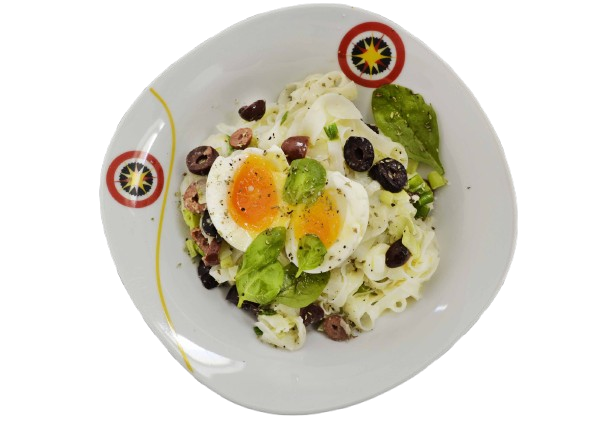
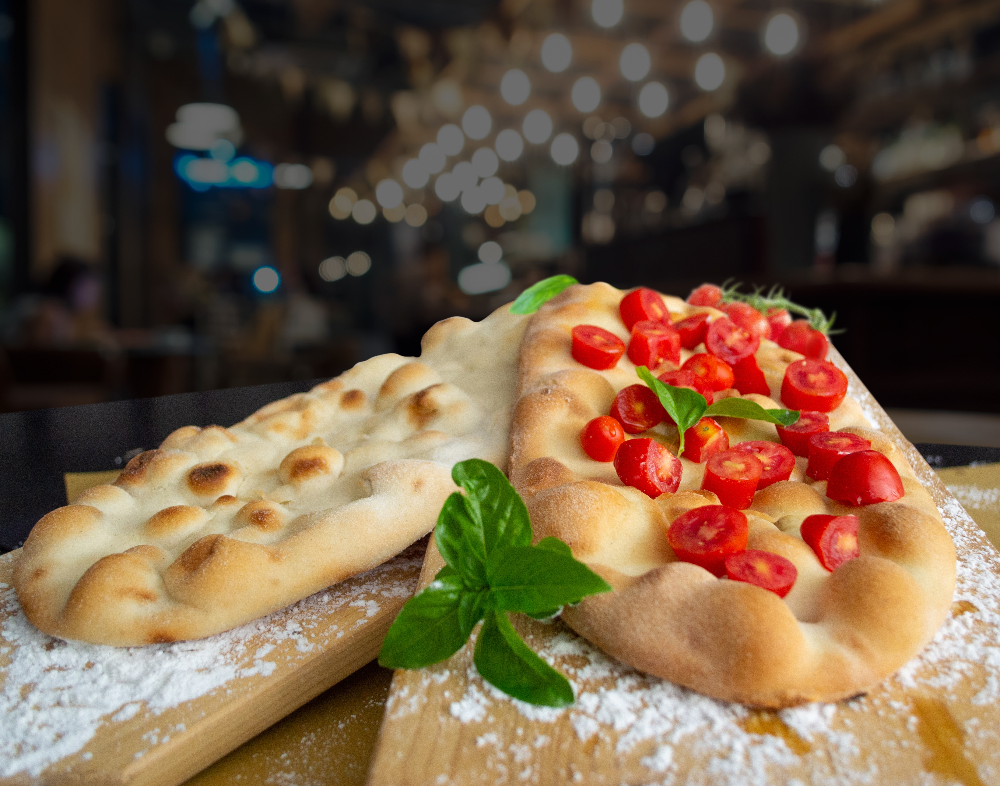
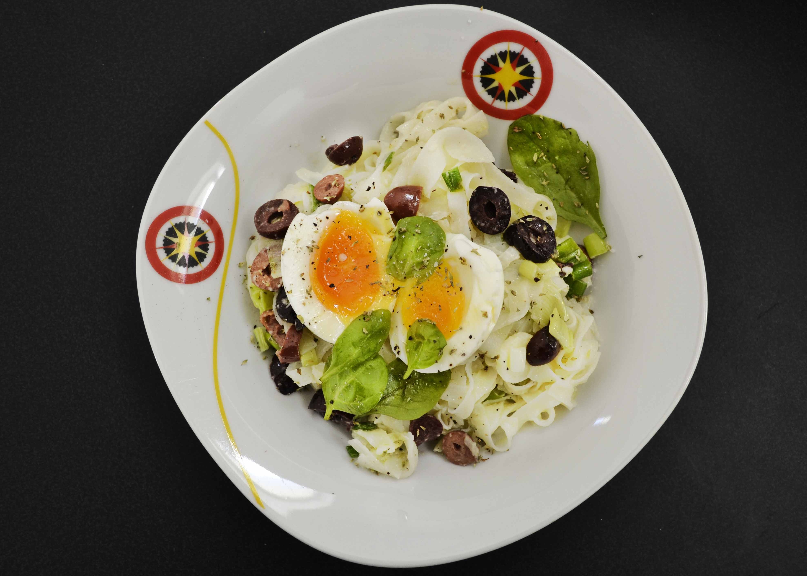
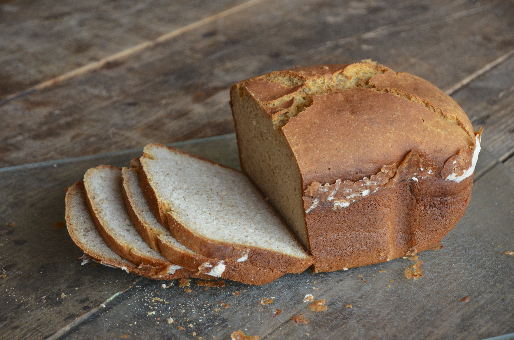

Cocina sin gluten, llena de sabor
Disfruta de una propuesta gastronómica pensada para todos, donde el sabor y la calidad son siempre la prioridad

Ingredientes seleccionados
Trabajamos con ingredientes naturalmente libres de gluten, seleccionados cuidadosamente para garantizar la máxima calidad en cada plato. Desde verduras frescas hasta proteínas y cereales alternativos, cada elemento se elige con atención.
Controlamos el proceso de elaboración para evitar contaminaciones cruzadas, asegurando así una experiencia segura para nuestros clientes. Este compromiso nos permite ofrecer platos fiables sin renunciar al sabor.
Además, apostamos por productos frescos y de temporada que aportan autenticidad y valor nutricional a cada receta.
Sabor sin renunciar a nada
La cocina sin gluten no significa perder textura ni intensidad. En Gastro adaptamos recetas tradicionales para mantener su esencia, utilizando alternativas que conservan el sabor original.
Exploramos nuevas combinaciones y técnicas culinarias para lograr platos equilibrados, donde cada ingrediente tiene su protagonismo. El resultado es una experiencia gastronómica completa y satisfactoria.
Queremos demostrar que comer sin gluten puede ser igual de variado, creativo y delicioso, ofreciendo opciones que sorprenden en cada bocado.


Pan artesanal recién horneado
El pan es uno de los pilares fundamentales de nuestra cocina, elaborado diariamente para garantizar frescura y sabor en cada servicio. Utilizamos harinas seleccionadas y procesos tradicionales que respetan los tiempos de fermentación.
Cada pieza se prepara con cuidado, logrando una corteza crujiente y un interior tierno que acompaña perfectamente cualquier plato. Desde panes clásicos hasta opciones más especiales, buscamos ofrecer variedad y calidad en cada bocado.
Además, incorporamos alternativas adaptadas a diferentes necesidades, incluyendo opciones integrales y sin gluten, para que todos puedan disfrutar de este imprescindible de la gastronomía.